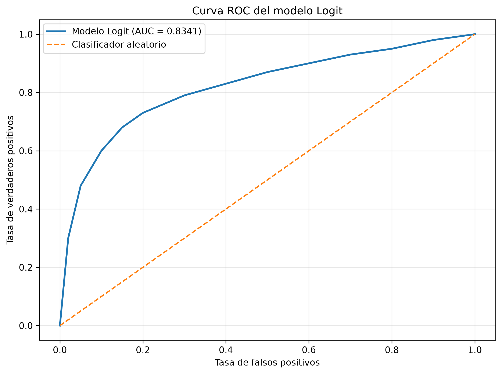

Factores asociados a la probabilidad de trabajar en Ecuador
Modelos Logit y Probit
Universidad: Universidad Técnica de Cotopaxi
Carrera: Economía
Asignatura: Econometría
Autora: Jeniffer Orosco
Fuente de información: Encuesta de Condiciones de Vida (ECV6R) - INEC Ecuador
¿Qué factores se encuentran asociados con la probabilidad de que una persona se encuentre trabajando?
Analizar los factores asociados con la probabilidad de trabajar mediante modelos econométricos de respuesta binaria Logit y Probit.
Se utiliza información de la Encuesta de Condiciones de Vida (ECV6R) del Instituto Nacional de Estadística y Censos (INEC).
Se estimaron modelos Logit y Probit para analizar la probabilidad de que una persona se encuentre trabajando. Se incorporaron variables relacionadas con sexo, edad y área de residencia.
Para la edad se incluyó también su término cuadrático con el objetivo de representar una posible relación no lineal.
Además, se calcularon efectos marginales promedio, AUC, accuracy, matriz de confusión y factores de inflación de la varianza (VIF).
| Variable | Logit | Probit |
|---|---|---|
| hombre | 0.2017 | 0.2035 |
| EDAD | 0.0461 | 0.0464 |
| edad² | -0.0005 | -0.0005 |
| urbano | -0.1443 | -0.1435 |
| Modelo | Pseudo R² | AIC | Log-Likelihood |
|---|---|---|---|
| Logit | 0.274846 | 83332.02 | -41661.01 |
| Probit | 0.274506 | 83371.11 | -41680.55 |
Ambos modelos presentan resultados muy similares. El modelo Logit presenta ligeramente menor AIC y un pseudo R² ligeramente superior, por lo que constituye la especificación preferida dentro de esta comparación.
| Variable | VIF |
|---|---|
| hombre | 1.0006 |
| EDAD | 16.8969 |
| edad² | 16.9013 |
| urbano | 1.0052 |
Los VIF elevados de EDAD y edad² son esperables debido a la relación matemática entre una variable y su transformación cuadrática. Esto debe considerarse al interpretar los coeficientes individuales.
AUC del modelo Logit: 0.8341
Accuracy: 0.7713
| Predicción 0 | Predicción 1 | |
|---|---|---|
| Real 0 | 21.547 | 11.912 |
| Real 1 | 7.749 | 44.742 |

Los resultados muestran asociaciones estadísticamente significativas entre las características individuales consideradas y la probabilidad de trabajar. El efecto marginal promedio asociado con la variable hombre es positivo, mientras que el correspondiente a urbano es negativo en la especificación estimada.
La edad presenta un efecto positivo acompañado de un término cuadrático negativo, lo que sugiere una relación no lineal entre edad y probabilidad de trabajar.
Los resultados deben interpretarse como asociaciones estadísticas y no como evidencia de relaciones causales.
Los modelos Logit y Probit permiten estudiar la probabilidad de trabajar a partir de características individuales y territoriales. Los resultados de ambos modelos son similares y presentan una capacidad predictiva razonable.
El modelo Logit presenta un AUC de 0.8341 y una exactitud de clasificación de 0.7713.
Entre las limitaciones se encuentra el tratamiento del diseño muestral de la encuesta y la utilización del factor de expansión sin incorporar necesariamente todos los componentes del diseño complejo.
Las referencias académicas y metodológicas utilizadas se encuentran documentadas en el minipaper del proyecto.